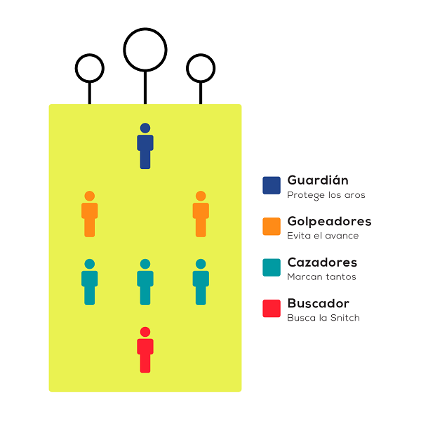

Forma de jugar Quidditch
El juego consiste en marcar tantos en uno de los tres aros que se encuentran en cada lado del campo de juego, con una de las tres pelotas que se encuentran en la cancha –llamada Quaffle- al momento de disputar la partida. Esta la única que se utiliza para anotar los goles.
Después están las Bludgers, que son aquellas que se utilizan para “quemar” a los integrantes del equipo contrario. Esto hace que los jugadores queden fuera de juego, por lo que deben volver a sus porterías y tocar los arcos para regresar al campo.

Las partidas las disputan siete jugadores de cada lado. Las posiciones son Guardián, Cazadores, Golpeadores y el Buscador. Además, existe un jugador imparcial que realiza el papel de la snith dorada, elemento fundamental dentro de la fantasía de Harry Potter. Para reemplazarla, el jugador que representa la snitch se cuelga una pelota en la parte de atrás de la cintura.
“Los buscadores deben perseguir al corredor, sin ejercer fuerza, y atrapar la pelota. Cuando esto sucede, se le otorgan 30 puntos al equipo que la capturó y se finaliza el parido”, explica Neal sobre la función de la snitch en el Quidditch. La duración de un partido es, aproximadamente, de 30 minutos.